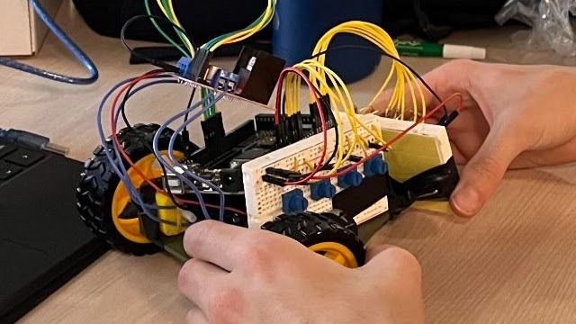
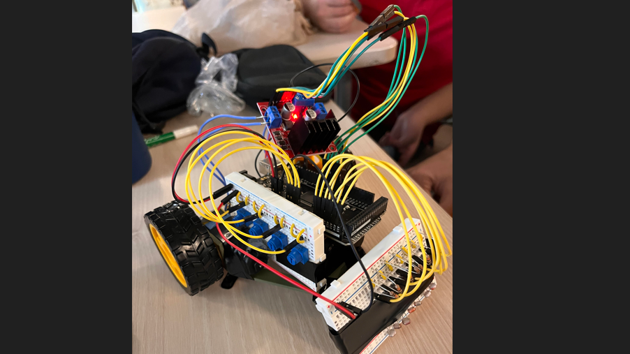
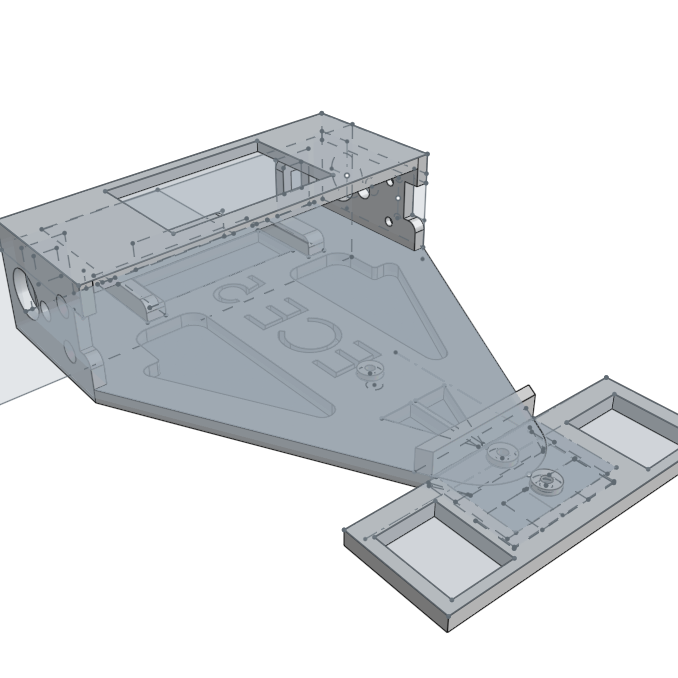
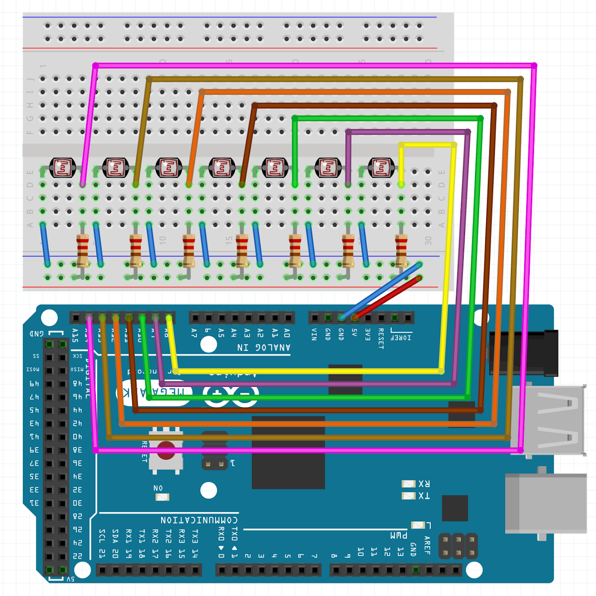
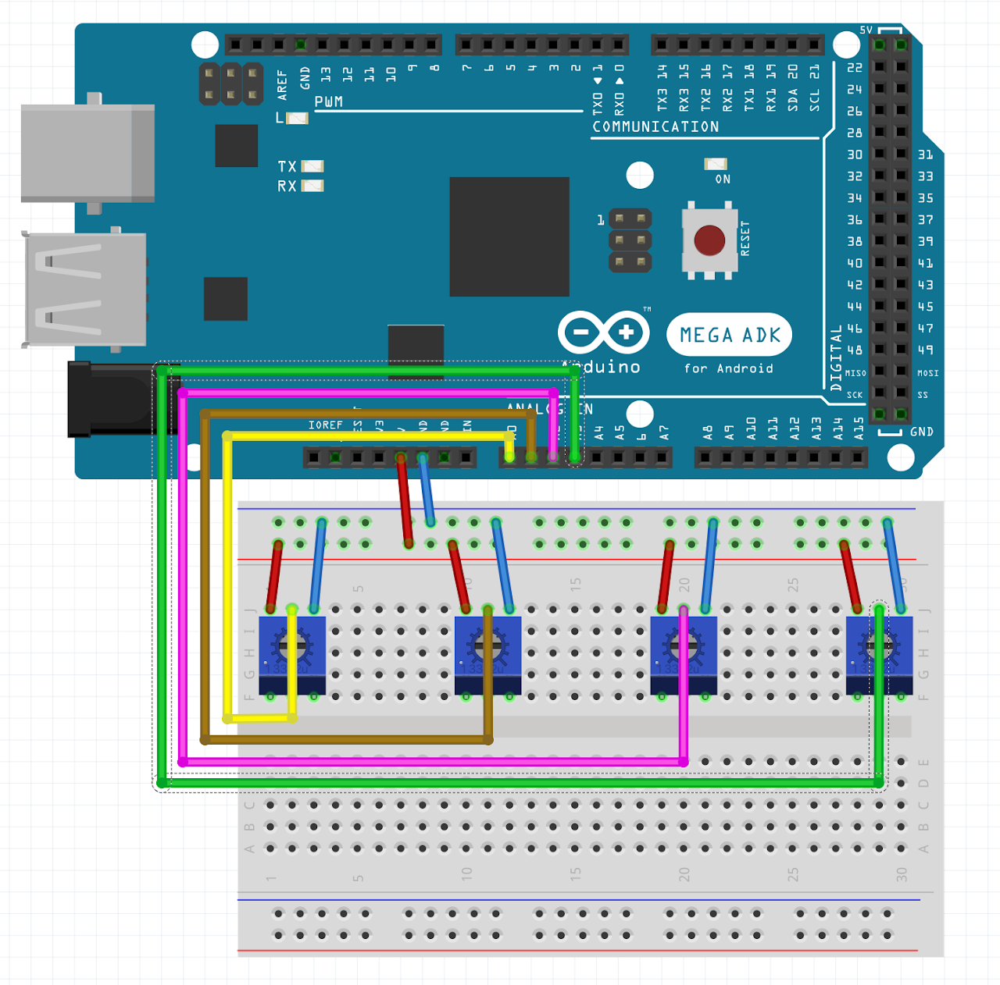
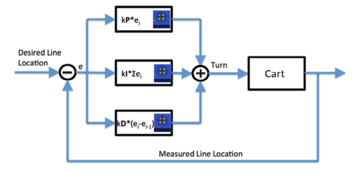
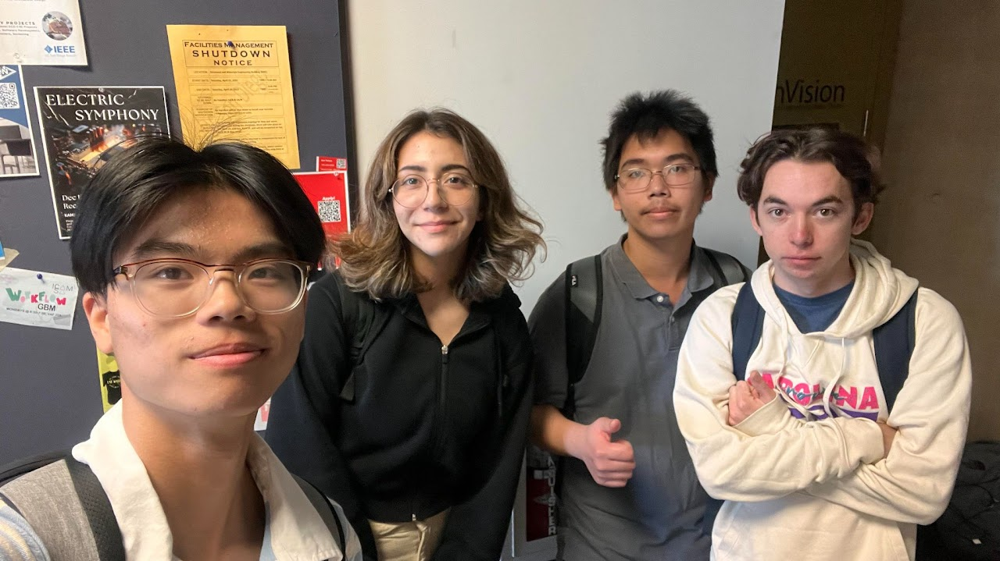
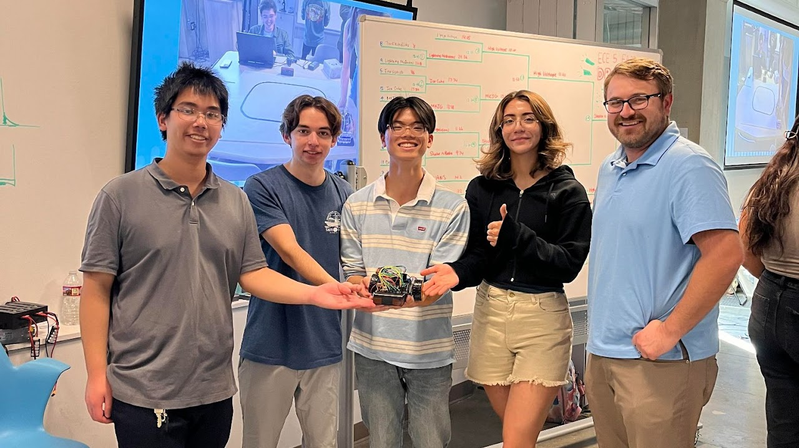

During the last week of the manufacturing process, we assembled all the individual components onto the new chassis. The whole system was stress tested and the PID values were adjusted and optimized for the race tracks. On the first seeding round, we got 8 laps. On the second seeding round, we got 11 laps. However, we tried to get a faster and more consistent lap number by changing the PID values. However, the robot had worse performance, but we eventually got similar performances. We could not get past the local maximum lap number during the second seeding round. In an effort to try improving our lap number, we reoriented the Arduino Mega for better weight distribution. So, if we got more time, we would make a new chassis with better weight distribution and enhance our photoresistors system. Also, if given more time, we would test our PID values more extensively.
Chassis

Photoresistor Circuit

PID Circuit

PID stands for Proportional Integral Derivative.
These categories refer to manipulations of voltage gain.
Error is the amount of offset that the robot has on the track.
Proportional gain ensures that the error will reach 0.
A higher proportional gain increases response time.
Integral gain removes long term error.
A higher integral gain increases response time and causes oscillations.
Derivative gain controls the speed at which the error reaches 0.
A higher derivative gain will decrease oscillations up to a threshold.
Tuning Speed and PID for the different tracks:
For the loop track we had to chnage the PID greatly.
We slowed down for this track.
On the drag race, we focused mainly on speed and cranked it up to max.
There were only some minor PID changes.
Lastly we have the frequency test where we focused on getting as far as possible so we slowed down our speed drastically and increased P & I a medium amout and D minimally.
Values Chosen:

Drag Race: 3rd place, 10.10 seconds
Circular Loop: 11 laps in 2 minutes
Frequency Sweep: 8 feet in 15.08 seconds
High Voltage, We are shocking. ⚡
With high electrical potential to innovate, we are shocking the market with shocking new discoveries.
The team before the project.

The team after the project with Dr. Karcher William Morris
